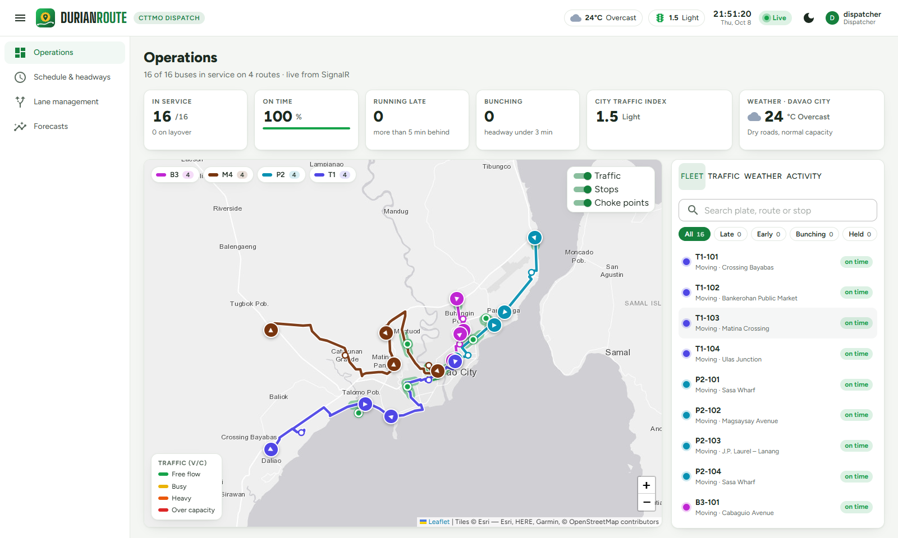
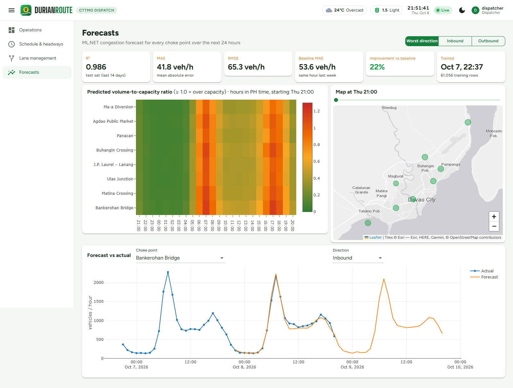
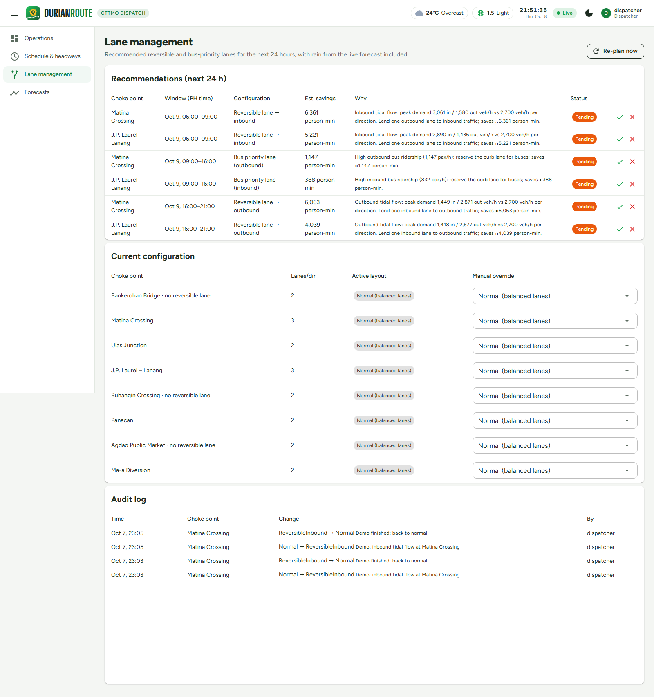
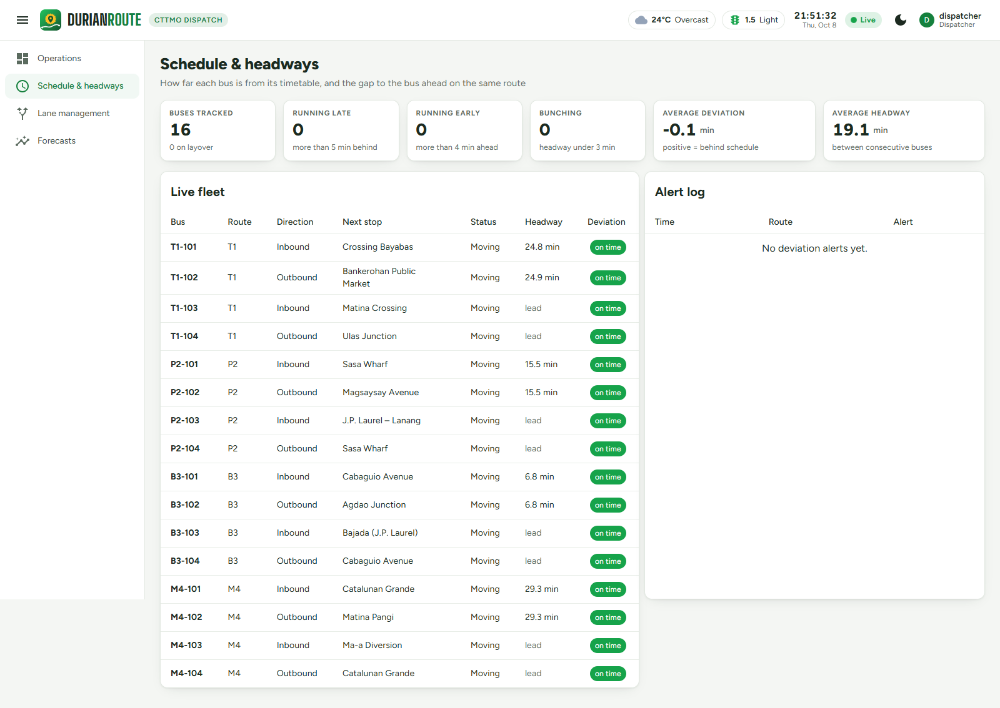
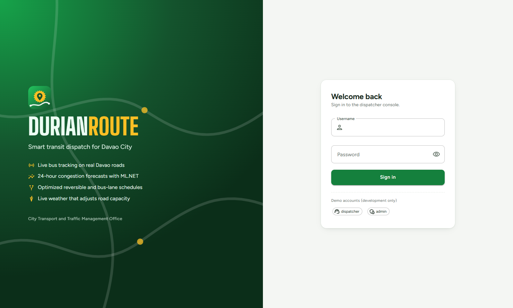

AI traffic optimization and real-time bus telemetry for Davao City. It tracks buses live, forecasts where traffic will jam 24 hours ahead, and recommends when to open reversible and bus-priority lanes.

The problem
Davao's main corridors, such as Matina Crossing, Bankerohan and J.P. Laurel–Lanang, jam in one direction at a time: inbound in the morning, outbound in the evening. Traffic managers react to congestion after it forms, and the lanes running the other way sit half empty.
Bus dispatchers have the same visibility problem. They find out a unit is late, or that two buses are bunched together, only when commuters complain.
How it works
Each stage feeds the next. The line below runs in the order the data actually flows.
A simulated fleet drives along real Davao roads and streams positions over SignalR. The server pushes to each route's group, so a dashboard only receives the routes it watches. Commands go the other way: a dispatcher can hold or release a bus to fix bunching.
SignalR · ASP.NET Core background servicesEvery hour, an ML.NET gradient-boosted tree predicts vehicle volume for each choke point and direction over the next 24 hours. It uses the hour, the day, holidays, school days, paydays, and the same hour yesterday and last week. Live weather from Open-Meteo lowers road capacity when it rains.
ML.NET FastTree · retrained dailyA dynamic program picks the lane layout for each hour that minimizes total commuter delay. Every 15 minutes it re-plans, with the forecast corrected by live conditions.
Dynamic programming · BPR delay modelDispatchers approve or reject each recommendation. Approved changes switch on automatically when their time slot starts, and every change is written to an audit log.
Blazor WebAssembly · MudBlazor · role-based accessOutput
This is the plan the scheduler produced for a weekday, in Philippine time. Only the two 3-lane corridors get recommendations. On 2-lane roads, taking a lane away costs more delay than it saves.
The algorithm
Each hour's cost is the delay commuters actually experience. It uses the Bureau of Public Roads formula from traffic engineering, plus a cost for switching layouts and for keeping enforcers on the road.
A unit test checks the dynamic program against brute force over every possible plan, and the two always find the same lowest cost.
// delay for one hour under one layout cost(h, s) = Σ dir [ cars·1.5·carDelay + busPax·busDelay ] + operatingCost·[s ≠ normal] carDelay = t0 · 0.15 · (v/c)⁴ // BPR // cheapest plan up to hour k ending in s best(k, s) = cost(k, s) + min_p [ best(k−1, p) + switchCost·[p ≠ s] ] // O(hours · layouts²)
Forecast accuracy
The model is tested on the most recent two weeks, not a random sample, so it never sees the period it is scored on. The comparison is "same hour last week", a common rule of thumb in traffic offices.
Error in vehicles per hour · lower is better
Screens




Engineering
The API and the real-time hub both enforce Admin and Dispatcher roles. Passwords are hashed, the login endpoint is rate-limited, database credentials stay out of source control, and every lane change is logged.
The test suite earned its keep. It showed that the first cost model would leave a reversible lane deployed all night, because nothing in the model said staffing it costs anything. An hourly operating cost fixed that, and a test now guards it.
Stack
Scope. Traffic and bus data are simulated from realistic Davao patterns, because real CTTMO counts weren't available. The system is built so that real data can replace the simulation without changing the model or the dashboard.